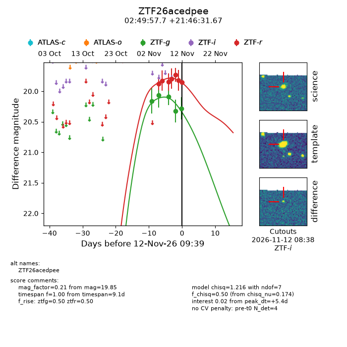
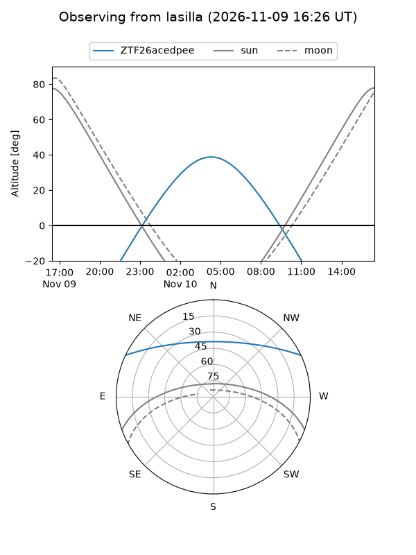
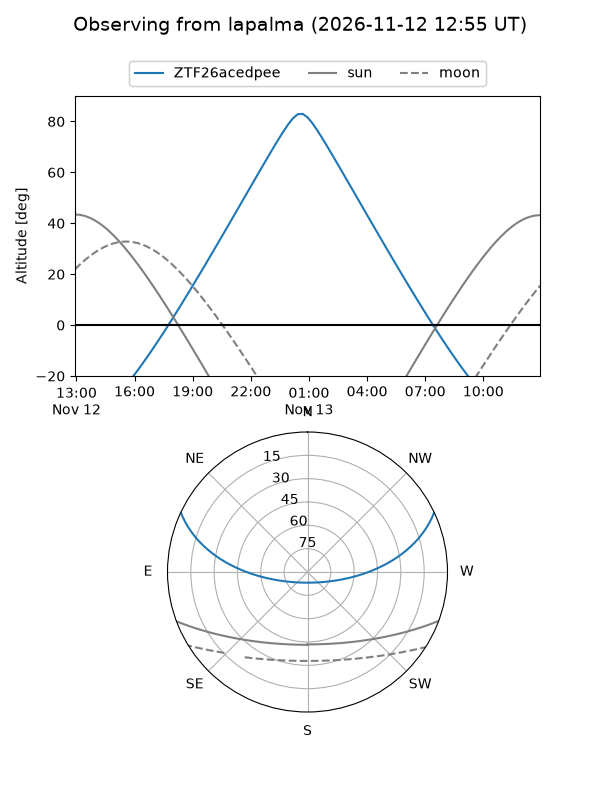
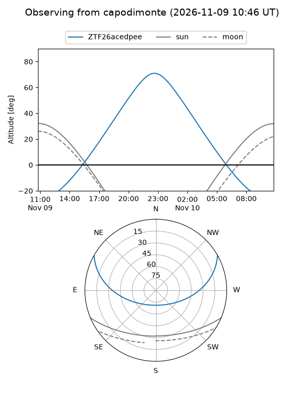
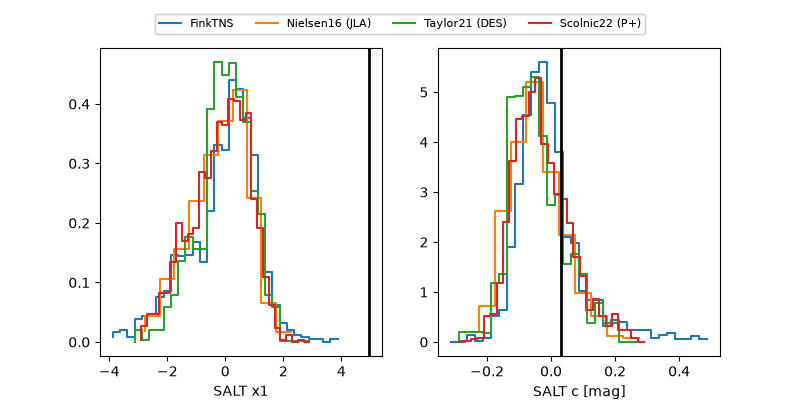

ZTF26acedpee
Target ZTF26acedpee at 2026-11-12 09:45
Aliases and brokers:
FINK-ZTF: ztf.fink-portal.org/ZTF26acedpee
Lasair-ZTF: lasair-ztf.lsst.ac.uk/objects/ZTF26acedpee
ALeRCE-ZTF: alerce.online/object/ZTF26acedpee
Direct TNS query: direct search
alt names
ZTF26acedpee (ztf,fink_ztf)
Coordinates:
equatorial (ra, dec) = 42.4903,+21.77546
equatorial (HMS+DMS) = 02:49:57.67,+21:46:31.67
galactic (l, b) = (156.2593,-33.31534)
Flags:
peak dt: +5.4
Photometry:
last ztfg=20.28, ztfr=19.85
5 ztfg, 7 ztfr detections
Lightcurve

Visibility



Additional plots
